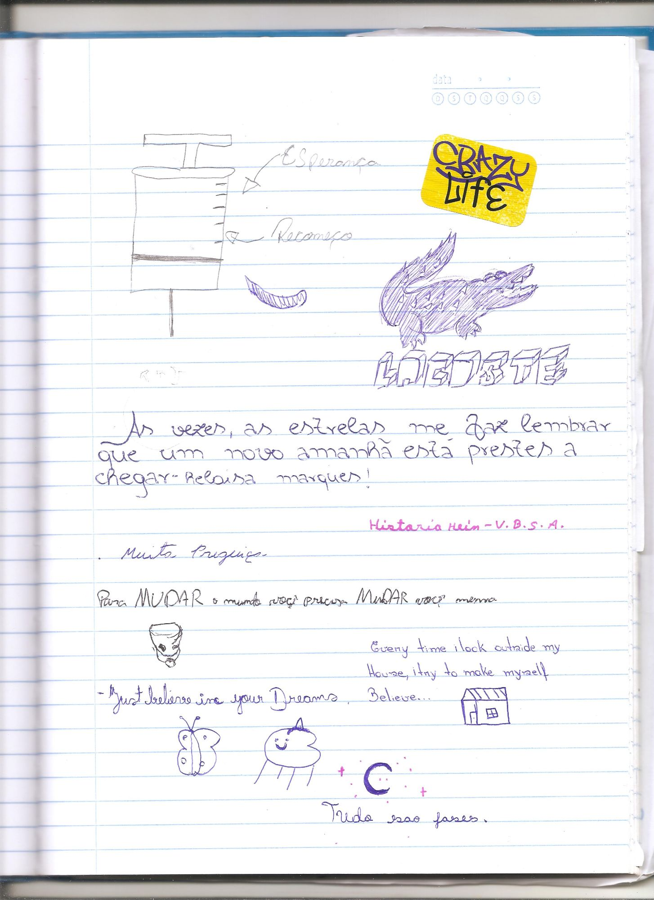

Desde que minhas aulas virtuais começaram, tenho documentado, enquanto estudante do 3° Ano do Ensino Médio em Brasília-DF e de forma independente, as influências da covid-19 na educação pública e agora enquanto estudante de licenciatura em artes visuais pela Universidade de Brasília.
“escola_em_casa” fala sobre o período virtual e o vazio nos espaços escolares durante o isolamento e “Sentimentos presenciais” sobre o
presencial.
Juntos são um registro histórico sobre o nosso país no agora. Imagens, áudios-relatos e um diário, um caderno em que, até agora, mais de 250
pessoas que tiveram e estão tendo alguma relação com a educação pública durante
a pandemia escreveram seus sentimentos de diferentes formas e linguagens.
Com o recente retorno das aulas presenciais nas escolas da rede pública de
ensino, tenho ido em diferentes estados: passei pelo Pará, Ceará e Minas
Gerais. Carregando o caderno dos sentimentos presenciais e registrando de
forma coletiva com professores e estudantes em vivências em que
desenhamos uma imagem a partir de palavras e sentimentos do agora,
como: sono, ansiedade, cansaço e evasão
Diário dos Sentimentos presenciais:
Em aulas presenciais, levo um caderno escolar e peço a quem tenha alguma relação com a educação em meio a pademia, escrevam seus sentimentos presenciais, escrevendo com seus próprios traços de forma livre e ocupando qualquer parte do caderno, entendendo também o amassar, colar figurinhas, escrever na vertical, colar post-it, rasgar, dobrar, riscar e cortar enquanto escrita e expressão. O caderno passa por outras escolas e outros estados provocando interações de correio, um espaço expositivo e de registro dos sentimentos do agora.

escola_em_casa em sua primeira versão se apresenta enquanto zine. Contendo um pouco do presencial, com a primeira página dos sentimentos presenciais escritos no diário por Miquéias Lima, Pedro Henrique, Mikaelly Ana, Thamires Gonzalez, Rafaela Crystine, Maria Luisa e Tharcyla Correia do 1°, 2° e 3° ano do ensino médio. E um pouco do virtual com participação da prof Patricia Manso e de Marcelo, Maria Clara, Nicolle Maicá, Fabio Teixeira, Julia Rodrigues e Leticia dias, do 3°ano do EM e que em 2021 se formaram junto comigo em meio a pandemia.
Primeira versão de escola_em_casa enquanto zine públicada pela Sô Edições
com 08 páginas + poster
local de produção: São Paulo
Tiragem Limidata
A minizine faz parte da 1ª Coleção de Minizines Sô Edições que tem participações de: Ana Luiza Meneses e Kito Nicácio (também daqui do DF) e Ana Bia Novais, Guilherme Borsatto, Luiza Kons, Malu Teodoro, Poppy Rennó, Sirli Freitas e Samanta Ortega.